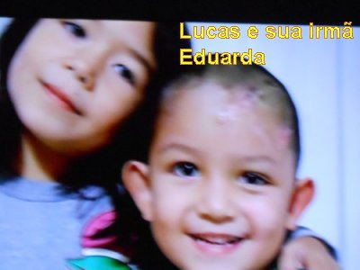
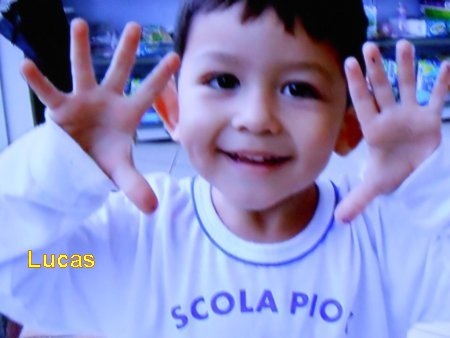
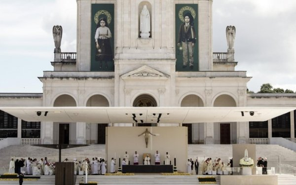
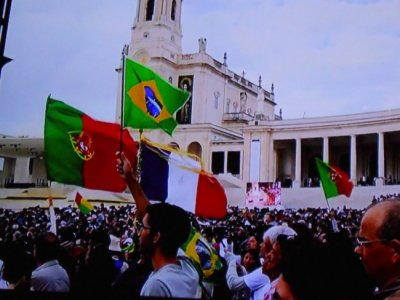
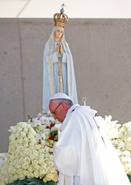
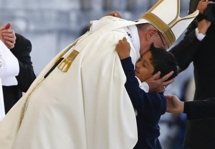
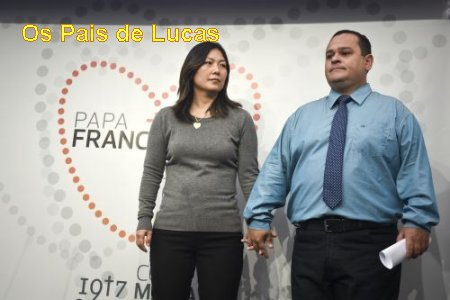

CANONIZAÇÃO DO
FRANCISCO E DA JACINTA MARTO
 No sábado dia 13 de Maio de
2017, a Igreja comemorou 100 anos da Aparição de NOSSA SENHORA em Fátima,
Portugal, quando a SANTÍSSIMA VIRGEM MARIA transmitiu a três crianças: aos dois
irmãos FRANCISCO
e JACINTA MARTO, e a prima LÚCIA, na Cova da Iria, preciosas Mensagens em benefício da
humanidade.
No sábado dia 13 de Maio de
2017, a Igreja comemorou 100 anos da Aparição de NOSSA SENHORA em Fátima,
Portugal, quando a SANTÍSSIMA VIRGEM MARIA transmitiu a três crianças: aos dois
irmãos FRANCISCO
e JACINTA MARTO, e a prima LÚCIA, na Cova da Iria, preciosas Mensagens em benefício da
humanidade.
FRANCISCO e JACINTA morreram ainda bem criança. LÚCIA viveu até o dia 13 de Fevereiro de 2005, falecendo com 97 anos de idade, no Carmelo de Santa Teresa em Lisboa, Portugal, depois de um trabalho intenso e brilhante, divulgando as Mensagens Divina, o Amor ao IMACULADO CORAÇÃO DE MARIA e realizando uma quantidade incontável de benefícios em prol da humanidade, conforme a Santíssima Vontade de nosso DEUS.
O FATO MILAGROSO
O casal João Batista e Lucila Yurie residentes em Juranda, cidade do interior do Estado do Paraná, tem dois filhos: Lucas e Eduarda.
No dia 3 de março de 2013, pelas 20 horas, Lucas que brincava com sua irmãzinha Eduarda, ao subir no peitoril da janela defronte a rua, perdeu o equilíbrio e caiu de uma altura de 6,50 metros. Ele que tinha apenas 5 anos de idade, bateu forte com a cabeça no chão, trincando e sangrando com abundância, havendo perda do tecido cerebral.
Imediatamente foi
levado ao serviço médico da cidade, mas devido à gravidade do caso, os pais
foram 
Mas a viagem demorou quase uma hora, e quando chegou, o menino apresentava um estado gravíssimo, teve duas paradas cardíacas e foi operado em situação de total urgência, inclusive sendo os pais informados pelos médicos, das poucas possibilidades de sobrevivência da criança.
Como os pais são devotos de NOSSA SENHORA DE FÁTIMA, começaram a rezar mais intensamente, suplicando o auxilio da MÃE DE DEUS. E no dia seguinte telefonaram para o Carmelo da cidade de Campo Mourão, pedindo as Irmãs que fizessem uma corrente de oração para salvar o menino. Todavia, naquele horário a Irmã não podia passar aquele pedido para a Comunidade Religiosa, pois estava no “horário de silêncio”. Então a Irmã pensou: “O menino vai morrer. Neste caso é melhor eu rezar pela família”.
Nos dias seguintes, como não acontecia uma melhora para o Lucas, os pais bastante aflitos pensaram em agilizar uma providência. Por outro lado, no dia 6 de Março, os médicos do Hospital vendo aquele triste panorama do estado da criança, pensaram em transferi-lo para outro Hospital, inclusive alertando os pais, de que as possibilidades de vida para o Lucas eram bem remotas, além de demandar um processo demorado se o menino vivesse, mas que também poderia a criança permanecer em estado vegetativo ou possuir sérias deficiências mentais, perdendo parcialmente ou totalmente a memória.
 Assim, no dia 7 de
Março os pais assumindo uma providência, telefonaram novamente para o Carmelo de
Campo Mourão. Neste dia a Irmã pode comunicar a Comunidade, transmitindo à grave
noticia. Imediatamente uma Irmã pegou as relíquias dos Beatos Francisco e
Jacinta Marto, e as colocou junto ao Sacrário: ajoelhou e rezou a súplica:
“Pastorinhos, salvem este menino, que é
uma criança como vocês”. A seguir, pediu
a Comunidade que rezasse para o Lucas, suplicando a intercessão dos dois Pastorinhos
de Fátima. E as orações foram feitas para que os Pastorinhos intercedessem junto a
NOSSA SENHORA, para que ELA conseguisse de DEUS a especial graça de vida para o Lucas.
Assim, no dia 7 de
Março os pais assumindo uma providência, telefonaram novamente para o Carmelo de
Campo Mourão. Neste dia a Irmã pode comunicar a Comunidade, transmitindo à grave
noticia. Imediatamente uma Irmã pegou as relíquias dos Beatos Francisco e
Jacinta Marto, e as colocou junto ao Sacrário: ajoelhou e rezou a súplica:
“Pastorinhos, salvem este menino, que é
uma criança como vocês”. A seguir, pediu
a Comunidade que rezasse para o Lucas, suplicando a intercessão dos dois Pastorinhos
de Fátima. E as orações foram feitas para que os Pastorinhos intercedessem junto a
NOSSA SENHORA, para que ELA conseguisse de DEUS a especial graça de vida para o Lucas.
Assim as Irmãs rezaram e da mesma forma também a família rezou, suplicando a intercessão dos Pastorinhos e, dois dias depois, no dia 9 de março o Lucas acordou, até sorriu, e começou a falar, e também perguntou por sua irmãzinha.
No dia 11 de Março saiu da UTI e dia 15 teve alta do Hospital, completamente curado, sem nenhuma sequela, conversando normalmente com plena lucidez. Foram realizados todos os procedimentos e as reações do Lucas foram absolutamente normais.

Os médicos, incluindo alguns que não eram crentes, disseram não ter explicação para esta recuperação. Aconteceu de fato uma maravilhosa manifestação milagrosa.
MILAGRE ESCOLHIDO
Os documentos foram enviados para “A Causa de Canonização do Francisco e da Jacinta Marto”, em Fátima, Portugal, e de lá, após as verificações legais, foram encaminhados ao Vaticano. Em seguida os documentos foram anexados ao Processo de Canonização das duas crianças. E assim, depois de ter sido apreciado pela Sagrada Congregação, a documentação recebeu o parecer favorável e o Processo foi encaminhado ao Papa Francisco que determinou a "CANONIZAÇÃO". O Sumo Pontífice veio pessoalmente a Fátima e Canonizou as duas crianças no dia 13 de Maio de 2017, numa linda e comovente celebração com a presença de milhares de devotos.
FOTOGRAFIAS






